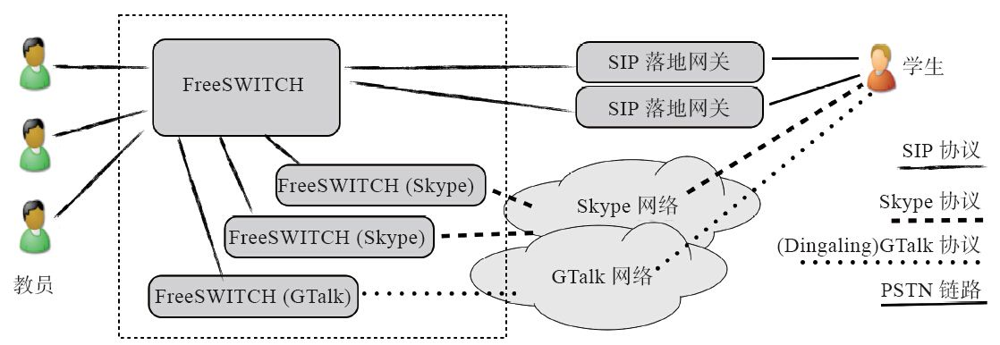

13.1 在同一台主机上启动多个FreeSWITCH实例
为了测试FreeSWITCH与FreeSWITCH之间的对接，我们需要多个FreeSWITCH实例。它们可以运行在同一台主机上，也可以运行在不同的主机上。在此，我们先从在一台主机上启动多个实例讲起。
本章我们会用到多个FreeSWITCH进行测试。当然，我们可以用很多台主机进行安装测试，也可以在一台服务器上安装多个虚拟机，但这些操作都费时费力。因此，在这里我们探讨一下多个FreeSWITCH实例能否运行在同一台主机上。当然，这对生产环境的FreeSWITCH也有指导意义。比如，有时可能需要在一台生产环境的服务器上部署多个不兼容的系统。
13.1.1 背景故事
几年前笔者曾经使用FreeSWITCH通过VoIP做过在线一对一的网络英语口语教学，由于需要连接Skype及Google Talk。就曾经在同一台主机上做过这样的部署，如图13-1所示。

图13-1 一个网络教学的FreeSWICH部署结构
其中，我们的服务器集群（图中虚线部分）在美国。教员也绝大部分在美国，他们的网络条件比较好，因而直接使用客户端通过SIP连接FreeSWITCH。而学生在中国，不能直接使用SIP，因此，我们直接使用了一些美国运营商的SIP落地网关将SIP呼叫转换到PSTN网络中，再打通学生的手机或固定电话。当然，有时会遇到学生手机信号不好，或者在异地上学习班的情况，此时他们的手机可能会支持高昂的漫游费 [1] ，为此我们开发了对Skype和Googl Talk（GTalk）的支持，即从FreeSWITCH中也可以打到学生的Skype或GTalk客户端上。
FreeSWITCH中有支持Skype的模块（原先叫mod_skypiax，后来改名为mod_skypopen）及GTalk（mod_dingaling）模块的支持。当然，我们这里主要讲怎么启动多个实例，而具体的模块配置就不讲了。
当时主要考虑到FreeSWITCH的Skype模块不是很稳定，所以我们把带Skype的FreeSWITCH启动到另一个实例（对于主的FreeSWITCH而言，它们就相当于两个SIP到Skype的转换网关），这样就避免了由于Skype模块崩溃影响到所有业务。当然，为了让Skype模块崩溃后也不影响使用Skype进行通话的学生，我们后来又启动了另一个带有Skype的FreeSWITCH实例。这样，正常情况下两个Skype网关可以平均分担Skype通话，一旦一台崩溃，所有的Skype话务就都由另外一台承担。起到了类似HA（High Availability，高可用）的效果。
后来我们又启动了一个带mod_dingaling的FreeSWITCH实例，用于与Google Talk互通。除了考虑到可能出现的mod_dingaling的稳定性问题外，我们主要是为了让呼叫处理更方便。比如，不管是呼叫什么用户，在主FreeSWITCH上的呼叫字符串都是类似sofia/gateway/<gateway-name>/<dest-number>的形式，从而编程开发方便了许多。
13.1.2 练习
这里我们虽不能复现当时的场景，但基本概念是差不多的。我们这里的练习就是在同一机器上启动两个FreeSWITCH实例而互相不冲突，甚至可以用各种方式进行互通。
我们都知道FreeSWITCH默认的配置文件在/usr/local/freeswitch/conf下。这里假设第一个实例已启动并正确运行。
为了启动第二个FreeSWITCH实例，首先我们要复制一个新的环境（放到freeswitch2目录中，以下的操作都在该目录中）：
# mkdir /usr/local/freeswitch2
# cp -R /usr/local/freeswitch/conf /usr/local/freeswitch2/
# mkdir /usr/local/freeswitch2/log
# mkdir /usr/local/freeswitch2/db
# ln -sf /usr/local/freeswitch/sounds /usr/local/freeswitch2/sounds
其中第1行创建一个新目录freeswitch2，第2行把旧的配置文件（整个conf目录）复制到新目录中，第4、5行分别创建log和db目录，最后一行做个符号链接，确保在新的环境也能正常访问声音文件。
然后，我们需要修改新配置中的一些配置参数以防止端口冲突。第一个要修改的就是Event Socket的端口号，它是在conf/autoload_configs/event_socket.conf.xml中定义的，找到它并把其中的8021改成另一个端口，比方说9021。
接着修改conf/vars.xml，把其中的5060、5080也改成其他的值，如7060和7080。
如果仅做简单的测试的话，改这两个地方就够了。但如果用于生产环境，还需要修改两个实例的配置文件，将其中的RTP端口号的范围改成不冲突的值。FreeSWITCH中自己维护一个RTP端口池，可以在conf/autoload_config/switch.conf.xml中修改，默认值如下（修改成不相互冲突的范围就行）：
<param name="rtp-start-port" value="16384"/>
<param name="rtp-end-port" value="32768"/>
当然如果你还加载了其他的模块，注意要把可能引起冲突的资源都改一下。比如因为笔者要用到mod_erlang_event模块，就需要改autoload_configs/erlang_event.conf.xml中的listen-port和nodename。
下面我们就可以启动测试了：
# cd /usr/local/freeswitch2/
# /usr/local/freeswitch2/bin/freeswitch -conf conf -log log -db db
以上命令分别用-conf、-log、-db指定新的环境目录。启动完成后将进入控制台。如果想使用fs_cli连接该实例的话，则可以打开另外一个终端窗口，使用如下命令连接（还记得前面我们把端口改成9021了吧？）：
/usr/local/freeswitch2/bin/fs_cli -P 9021
找个软电话注册到7060端口试试，比如笔者使用X-Lite注册时，服务器地址填的是192.168.1.100:7060。
当然，为了以后启动方便，也可以将上述启动第二个FreeSWITCH的命令写到一个简单的脚本里面。例如下面我们使用了bash脚本：
#!/bin/bash
FSDIR=/usr/local/freeswitch2
cd $FSDIR
$FSDIR/bin/freeswitch -conf conf -log log -db db
当然，如果需要启动多个实例，只需要重复本节的步骤，将不同实例的配置文件放到不同的目录中去，将相关的参数修改成不冲突的值就可以了。
13.1.3 进阶
上一节讲到的两个FreeSWITCH实例运行的是同一份代码。有时候，你还可能运行两个不同版本的FreeSWITCH。在这种情况下，在编译的时候就需要指定一个不同的安装目录，比如下面我们指定将新版本的FreeSWITCH安装到/opt/freeswitch目录中：
# ./configure --prefix=/opt/freeswitch
# make && make install
安装完毕后，如果执行/opt/freeswitch/bin/freeswitch命令，它就默认使用/opt/freeswitch/conf目录下面的配置文件，我们也不需要再复制一份配置文件了。
当然，如果需要两个实例同时运行，还是要修改其中一个的相关端口号，以避免冲突。改完以后就可以使用下列命令启动新的FreeSWITCH实例了：
/opt/freeswitch/bin/freeswitch
如果用于生产环境，你可能也想把新的配置加到随操作系统启动的自启动文件里去，这些就留给读者自己练习了。
[1] 比较奇怪的是，我们使用的国际落地长途电话比国内的漫游费都便宜。